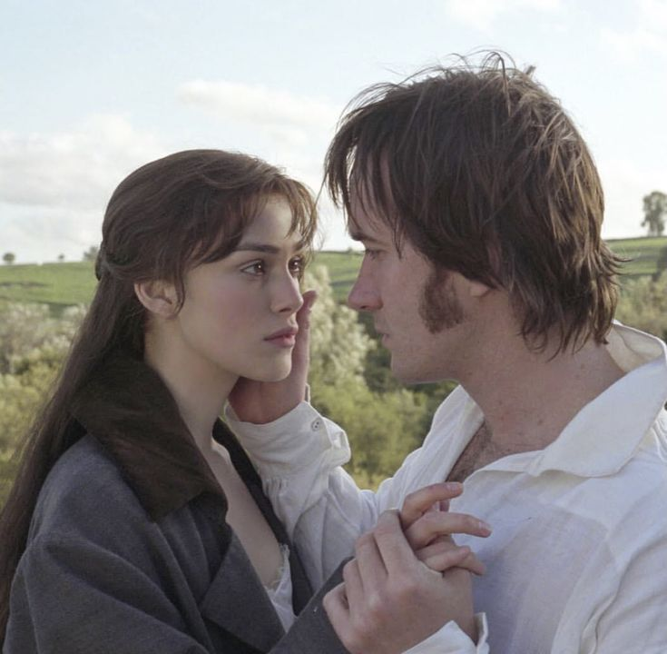
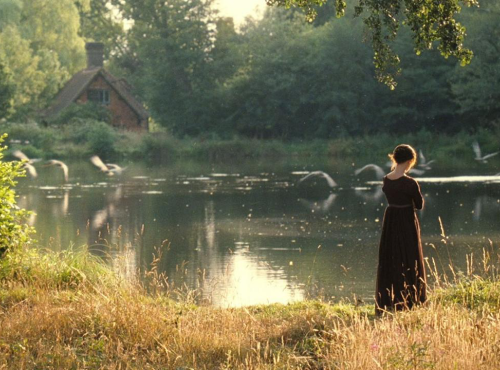

PRIDE AND PREJUDICE
Pride & Prejudice is a 2005 romantic drama film directed by Joe Wright and based on the classic novel by Jane Austen. The movie follows the story of Elizabeth Bennet, a spirited young woman in early 19th-century England, as she navigates issues of marriage, morality, and social expectations while clashing with the proud and enigmatic Mr. Darcy.
Pride & Prejudice is a timeless romance set in the English countryside, known for its breathtaking visuals and emotional depth...
 Set in the English countryside, the film beautifully captures the elegance and restraint of Regency-era society. With sweeping cinematography, period costumes, and a moving score by Dario Marianelli, *Pride & Prejudice* brings Austen’s beloved characters to life with emotional depth and visual splendor.
“You have bewitched me, body and soul.”
— Mr. Darcy
Keira Knightley delivers a vibrant and nuanced performance as Elizabeth Bennet, capturing both her wit and vulnerability. Matthew Macfadyen portrays Mr. Darcy with quiet intensity, embodying his transformation from aloof aristocrat to devoted lover. Their chemistry is one of the film’s most memorable elements.
 The supporting cast includes Brenda Blethyn as the overbearing Mrs. Bennet, Donald Sutherland as Mr. Bennet, and Tom Hollander as the obsequious Mr. Collins. The film received critical acclaim for its direction, performances, and cinematography, and was nominated for four Academy Awards.
“My good opinion, once lost, is lost forever.”
— Mr. Darcy
As a modern adaptation of a literary classic, *Pride & Prejudice* successfully blends historical authenticity with emotional storytelling. It remains one of the most popular and enduring interpretations of Austen’s work and is often praised for its visual beauty and timeless romance.
Main Cast
Keira Knightley
Elizabeth Bennet
Matthew Macfadyen
Mr. Darcy

Brenda Blethyn
Mrs. Bennet

Donald Sutherland
Mr. Bennet
Tom Hollander
Mr. Collins
Rosamund Pike
Jane Bennet